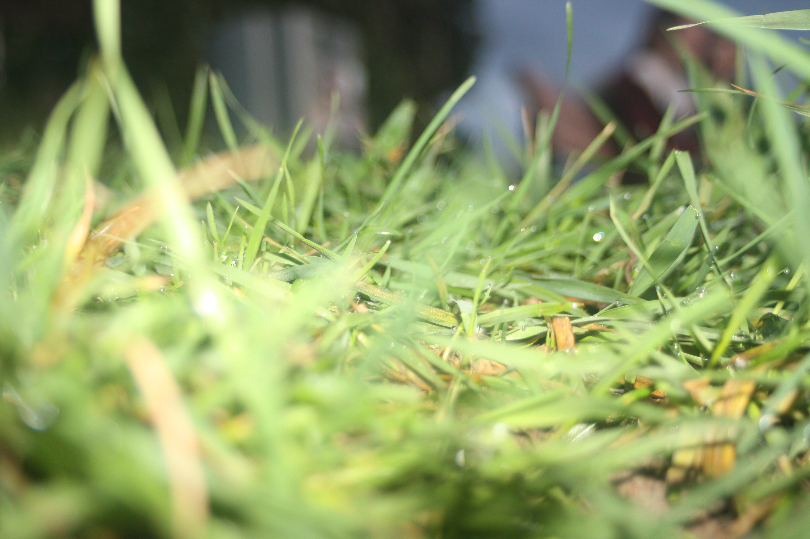
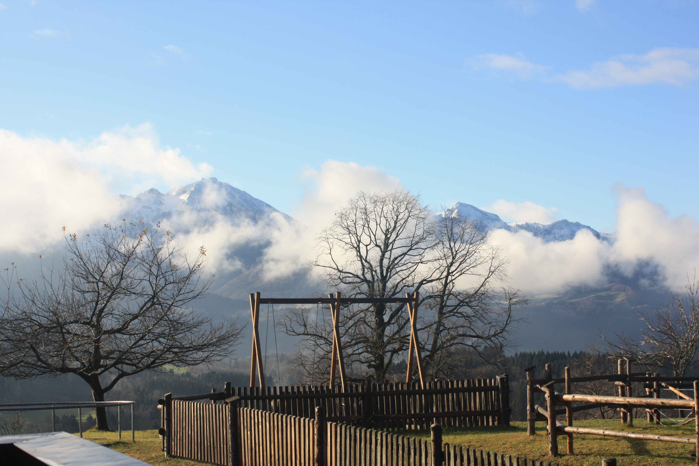

Hallo! Hier meine 3 besten Bilder
Dieses Bild ist mein Favorit, da es schwer zu fotografieren war, aber man dann eigentlich alles doch im Detail
sehen kann. Das einzige Problem bei diesem Bild ist, dass von Mannheim im Hintergrund die Lichtverschmutzung erhöht
ist. Dadurch sieht man immer weniger Sterne.

Dieses Bild belegt meinen zweiten Platz, weil ich es einfach interessant fand, wie das Leben aus anderen Perspektiven
aussehen würde, und ich habe auch Bilder aus anderen Perspektiven gemacht. Das Leben einer Maus fand ich davon aber am
besten.

Dieses Bild belegt nicht meinen dritten Platz, weil ich es besonders toll finde, sondern weil ich diesen Bauernhof in Siegsdorf ziemlich schön finde. Es ist ein Ort im Chiemgau, am Chiemsee in Bayern.
Julius Bürgy, Klasse 8b am Bunsen-Gymnasium Heidelberg
- Diese Bilder wurden alle selbst gemacht und wurden nicht bearbeitet -